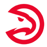

Best Kalshi promo code CBSSPORTS55: Score $55 bonus for 49ers-Vikings, NFL Sunday Night Football predictions
New Kalshi users can get a $55 bonus after making $25+ in trades on all of Sunday's NFL Week 11 action
Every league’s headlines, every team’s news.


Pistons at Hawks


 Hurricanes vs. Rangers
Hurricanes vs. Rangers


 Wild vs. Canucks
Wild vs. Canucks
 Celtics at Kings
Celtics at Kings
 Colts vs. Texans
Colts vs. Texans
 Chargers vs. Ravens
Chargers vs. RavensNew Kalshi users can get a $55 bonus after making $25+ in trades on all of Sunday's NFL Week 11 action

New Kalshi users can get a $55 bonus after making $25+ in trades on Sunday's NFL games

Fantasy football analyst Scott Pianowski examines the winners and losers of Sunday's Week 11 action.
New Kalshi users can get a $55 bonus after making $25+ in trades on the NFL Week 11 Vikings vs. 49ers SNF matchup

The Los Angeles Chargers lost to the New York Jets to fall to 1-9 on the season. Then they got some bad news about their star QB.

Bears QB Caleb Williams records another game with at least two passing touchdowns in Week 11

Join Mile High Report to discuss the action from this Week 11 matchup between the Denver Broncos and Las Vegas Raiders.

Washington appeared to make a superb touchdown catch, but the officials and the replay office ruled it incomplete.

Three more games continued Matchweek 36 of the 2026 Brasileirão this Sunday (22).In the first match of the day, Athletico-PR beat Remo 4–2, mathematically confirming the Pará club's relegation.Fur...

Mauricio Pochettino's reign as Manchester United boss could barely have got off to a more chastening start, writes Simon Stone.

Match of the Day pundit Danny Murphy explains how Rio Ngumoha showed everyone what he is capable of in Liverpool's 4-0 win over Manchester United.

Mauricio Pochettino believes even the best team in the world could have conceded four goals at Liverpool in Manchester United's circumstances - but should the Red Devils have done more in defeat?

The Dynamo, who said in a statement that they are 'aware' of the incident, begin their postseason against the San Jose Earthquakes on Tuesday.

The Bundesliga returned following the final international break of the year, and what a spectacle it was. From a swing of the title race pendulum, to changes at the bottom of the table, Get German Foo...

Cristian Chivu warns Inter ‘failed the exam’ in their 4-4 draw with Atalanta, criticising some of his players. ‘We were too soft, need to be more determined in the duels.’The Nerazzurri perfor...

Fifa is set to confirm on Monday that a first football World Cup will be hosted in the United Kingdom since 1966.

The free agent ace will join a rotation that includes Nolan McLean and Christian Scott

For the first time in years, the Dodgers missed out on their top free agent target. Here's how they can pivot.

Even after inserting the two-time Cy Young winner at the front of the rotation, the Mets still need pitching help and more

Evn with Skubal headed to the Mets, the runners-up have plenty of options to bulk up their rotations for the 2027 season

Tarik Skubal gets his historic contract and joins the star-studded Mets

Tarik Skubal's record $450 million Mets contract came days before a possible MLB lockout. Here's how we grade it.

Mets drop $450 million less than two weeks before MLB shuts down over labor battle.

Is the Tigers’ espresso machine also making the move from LA to Queens?

American Thanksgiving is an important benchmark in the NHL season, despite there still being two-thirds of the season left to play. According to ESPN's research at this time last year, since the NHL adopted their current wild card format, 77% of teams in a playoff spot on the November holiday end up making their way…

This is an excerpt from this week's Devils Notebook. For more on hockey sense, the Devils, and more hits from the previous week, make sure to check it out at The Hockey News.

As initially reported by Nick Kieser, Ottawa Senators general manager Steve Staios was in attendance for last night's matchup between the Nashville Predators and Pittsburgh Penguins.

The Pittsburgh Penguins will make defensive and goaltending changes on Sunday.

This former Canadiens first-round pick is playing very well with the Blues.


The Edmonton Oilers have been one of the best teams in the NHL, but Saturday's 7-4 loss to the Carolina Hurricanes was a reminder that there's plenty work to be done.

The NHL fined the Los Angeles Kings the maximum allowable amount for his cross-check on Saturday night, but the Senators were the ones who ended up shorthanded.

The Lakers will honor Lawrence Tanter with a commemorative banner on Star Plaza outside of Crypto.com Arena before the Lakers play the Jazz on Monday. Fans are invited to share...

Wembanyama is just as guilty of the basketball crimes he loves to rail against, but that's not stopping him from getting on his soapbox

The Celtics take on the Golden State Warriors as they look to get back on track after losing 3 straight.

Sunday's game between the Oklahoma City Thunder and Miami Heat will be missing some serious star power.

Austin Reaves was a full participant at Lakers practice on Sunday after missing four straight games because of a left heel bruise. The Lakers didn’t do any live-action drills Sunday,...

Howard said his priority at the time was getting Monta Ellis to Orlando

Golden State basketball is on the way! Come join our game thread and chat about tonight’s matchup here.

Who should play start next to Devin Booker in the backcourt?

UFC flyweight veteran Kyoji Horiguchi shared his reaction after picking up a big win over Asu Almabayev at UFC Qatar.Horiguchi earned a unanimous decision win over Almabayev on the UFC Qatar main card. Though it was far from the most exciting fight of the night, it was still a solid win for Horiguchi, who bounced […]…


UFC Qatar went down yesterday (Sat., Nov. 21, 2026) in Doha, Qatar, which saw Navajo Stirling knockout former UFC light heavyweight champion, Jiri Prochazka (see it again here). In the co-main event of the evening, Kevin Vallejos defeated former UFC bantamweight champion, Aljamain Sterling, while Dan Hooker defeated…

Jiri Prochazka is on the first losing skid of his career after UFC Qatar. What does that mean for his future?

UFC lightweight veteran Dan Hooker says he tried to convince Brian Ortega not to retire following their fight at UFC Qatar.Ortega lost a one-sided unanimous decision to Hooker at UFC Qatar, and afterwards, he took off his UFC gloves and announced his retirement from MMA.Hooker, though, says he tried to convince his…

UFC welterweight champion Islam Makhachev doubled down on his acceptance of Merab Dvalishvili being assaulted in Abu Dhabi.Dvalishvili and his friend were assaulted by Makhachev’s teammates, brothers Usman Nurmagomedov and Umar Nurmagomedov, plus six other men, in an assault last week at an Abu Dhabi hotel that was…
Ikram Aliskerov lauded opponent Jared Cannonier's durability after he had to put in 15 hard minutes for the third straight fight at UFC Qatar.

Kevin Vallejos has strong message for Jean Silva and Lerone Murphy